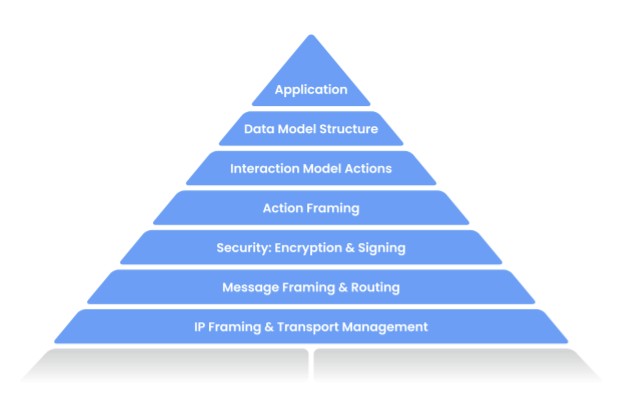

Welcome to Matter’s documentation!
Contents
Welcome to Matter’s documentation!#
Matter (formerly Project Connected Home over IP, or Project CHIP) is a new Working Group within the Connectivity Standards Alliance (CSA, formerly Zigbee Alliance). This Working Group plans to develop and promote the adoption of a new, royalty-free connectivity standard to increase compatibility among smart home products, with security as a fundamental design tenet.
The goal of the Matter project is to simplify development for manufacturers and increase compatibility for consumers. The project is built around a shared belief that smart home devices should be secure, reliable, and seamless to use. By building upon Internet Protocol (IP), the project aims to enable communication across smart home devices, mobile apps, and cloud services and to define a specific set of IP-based networking technologies for device certification.
The CSA officially opened the Matter Working Group on January 17, 2020 and is in the process of drafting the specification.
Visit buildwithmatter.com to learn more and read the latest news and updates about the project.
Project Overview#
Development Goals#
Matter is developed with the following goals and principles in mind:
Unifying: Matter will produce a new specification, building with and on top of market-tested, existing technologies.
Interoperable: The specification permits communication between any Matter-certified device, subject to users’ permission.
Secure: The specification leverages modern security practices and protocols.
User Control: The end user is in control of authorization for interaction with devices.
Federated: No single entity serves as a throttle or a single-point-of-failure for root of trust.
Robust: The set of protocols specify a complete lifecycle of a device — starting with the seamless out-of-box experience, through operational protocols, to device and system management specifications required for proper function in the presence of change.
Low Overhead: The protocols are practically implementable on low compute-resource devices, such as MCUs.
Pervasive: The protocols are broadly deployable and accessible, thanks to leveraging IP and being implementable on low-capability devices.
Ecosystem-Flexible: The protocol must be flexible enough to accommodate deployment in ecosystems with differing policies.
Easy to Use: The protocol should aim to provide smooth, cohesive, integrated provisioning and out-of-box experience.
Open: The Project’s design and technical processes should be open and transparent to the general public, including to non-members wherever possible.
Architecture Overview#

The Project, as illustrated above, defines the application layer that will be deployed on devices and controllers as well as the supported IPv6-based networks to help achieve our interoperability architectural goal. Matter will initially support Wi-Fi and Thread for core, operational communications and Bluetooth Low Energy (BLE) to simplify device commissioning and setup.
The Application Layer can be further broken down into seven main components:

Application: High order business logic of a device. For example, an application that is focused on lighting might contain logic to handle turning on/off the bulb as well as its color characteristics.
Data Model: Data primitives that help describe the various functionalities of the devices. The Application operates on these data structures when there is intent to interact with the device.
Interaction Model: Represents a set of actions that can be performed on the devices to interact with it. For example, reading or writing attributes on a device would correspond to interactions with the devices. These actions operate on the structures defined by the data model.
Action Framing: Once an action is constructed using the Interaction Model, it is framed into a prescriptive packed binary format to enable being well represented on the “wire”.
Security: An encoded action frame is then sent down to the Security Layer to encrypt and sign the payload to ensure that data is secured and authenticated by both sender and receiver of a packet.
Message Framing & Routing: With an interaction encrypted and signed, the Message Layer constructs the payload format with required and optional header fields; which specify properties of the message as well as some routing information.
IP Framing & Transport Management: After the final payload has been constructed, it is sent to the underlying transport protocol for IP management of the data.
Current Status of Matter#
Matter’s design and technical processes are intended to be open and transparent to the general public, including to Work Group non-members wherever possible. The availability of this GitHub repository and its source code under an Apache v2 license is an important and demonstrable step to achieving this commitment.
Matter endeavors to bring together the best aspects of market-tested technologies and to redeploy them as a unified and cohesive whole-system solution. The overall goal of this approach is to bring the benefits of Matter to consumers and manufacturers as quickly as possible. As a result, what you observe in this repository is an implementation-first approach to the technical specification, vetting integrations in practice.
The Matter repository is growing and evolving to implement the overall architecture. The repository currently contains the security foundations, message framing and dispatch, an implementation of the interaction model and data model. The code examples show simple interactions, and are supported on multiple transports – Wi-Fi and Thread – starting with resource-constrained (i.e., memory, processing) silicon platforms to help ensure Matter’s scalability.
How to Contribute#
We welcome your contributions to Matter. Read our contribution guidelines here.
#
Matter build status#